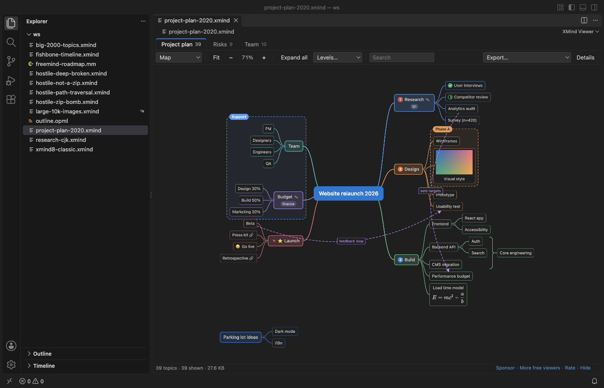

Open files in VS Code and Cursor / Docs and diagrams
Export an XMind mind map to Markdown
You do not need XMind to get the text out of a .xmind file. XMind Viewer opens maps from XMind 8 and XMind 2020 and later in VS Code, and its Export menu copies a sheet as a Markdown outline or saves all sheets as one Markdown file. Topics become a nested list, with notes, labels, links, equations and relationships. The Markdown, PNG and SVG exports are free. Zovo Pro (USD 19 once) adds a tool that converts every map in a folder to Markdown, CSV or OPML in one run, with 3 free tries.
Free, MIT license. Extension ID zovo.xmind-mind-map-viewer, version 0.2.3. Needs VS Code 1.90.0 or newer.

Steps in VS Code
- Install XMind Viewer from the Marketplace, or press Ctrl+P (Cmd+P on macOS) and run
ext install zovo.xmind-mind-map-viewer. - Click the
.xmindfile in the Explorer. The map opens with one tab per sheet. FreeMind and Freeplane.mmfiles and.opmloutlines open the same way. - Open the sheet you want and pick "Copy sheet as Markdown" in the Export menu. Paste the outline into a note, an issue or a README.
- For the whole file, pick "Save all sheets as Markdown" and choose where to save the
.mdfile. Each sheet gets its own heading. - Read the result. Each topic is a list item, indented by level. Notes follow as quote lines, labels as code and web links as Markdown links. Floating topics and relationships get their own sections at the end.
- For a picture of the map, pick "PNG picture" or "SVG picture" in the same menu. PNG goes up to 2x.
Where Zovo Pro saves time
Opening maps, every sheet, search, collapse, zoom, and the PNG, SVG and Markdown exports are free. The viewer makes no network requests and never changes your map file.
One map at a time is fine, but a folder of old XMind files is a long job. Convert a folder of mind maps reads every .xmind, .mm and .opml file in a folder and its subfolders. It writes each one as Markdown, CSV or OPML into a folder you pick, with the same subfolders. A report lists what was converted and what could not be read, and existing files are never overwritten. The other Pro tools save every sheet as one PDF and save a map as a CSV table for Excel or as OPML.
With Convert a folder of mind maps (Zovo Pro)
- Right-click a folder in the Explorer and pick "Convert a folder of mind maps to Markdown, CSV or OPML (Zovo Pro)".
- Pick Markdown, then the folder for the new files.
- Read the report that opens. A try counts only when at least one file is converted.
Convert a folder of mind maps works 3 times on your computer before it asks for a license, and a try counts only when you get a result. Opening a file shows no popup and no countdown.
Zovo Pro costs USD 19 once. It is not a subscription, and it turns on the Pro tools in every Zovo extension, not only XMind Viewer. After a card payment (Stripe) your license key shows on the next page. In VS Code, run "Zovo Pro: Enter Zovo Pro license key" from the Command Palette and paste it. The key is checked on your computer, with no network call. With GitHub Sponsors, pick the "$19 one time" tier, then run "Zovo Pro: I already paid: unlock with GitHub Sponsors" and sign in with the same GitHub account. With PayPal, send USD 19 with "Zovo Pro" in the note and the key comes by email within a day.
A team of 5: USD 59 once, by card or by PayPal. Every rule and every Pro tool is on the Zovo Pro page.
Steps in Cursor, Windsurf or VSCodium
- Open the Extensions view with Ctrl+Shift+X (Cmd+Shift+X on macOS).
- Search for
zovo.xmind-mind-map-viewerand click Install. Cursor, Windsurf and VSCodium install from Open VSX, where it is published aszovo/xmind-mind-map-viewer. - If your editor has no gallery, download the .vsix from the Open VSX page and run "Extensions: Install from VSIX...".
- Then use it the same way as in VS Code.
What XMind Viewer handles
- XMind 2020 to 2026 and XMind Zen files, and XMind 8, XMind 7 and older 3.x files.
- Every sheet of a file, with collapsed branches included.
- Notes, labels, links, LaTeX equations and summary topics in the outline.
- FreeMind and Freeplane
.mmfiles and OPML outlines.
What it does not do
- Markers, pictures, colors and the layout are not part of the Markdown outline.
- Maps with a password cannot be opened, because XMind encrypts their content.
- The viewer is read-only. To change a map, open it in XMind or another mind map editor.
- In an exported PNG, equations show as their LaTeX source. SVG keeps them as MathML.
Other options
- XMind. The desktop app opens and edits the map and has its own export menu. Some export formats need a paid XMind plan.
- xmindparser. A free Python library that reads .xmind files into Python data or JSON. You write the Markdown yourself.
Install counts and Open VSX status were checked on 13 November 2026. Descriptions in quotes are the extensions' own.
Questions
Do I need XMind installed?
No. The extension reads the .xmind file itself, offline.
Are collapsed branches included?
Yes. The Markdown has every topic, also the ones that are folded in the view.
Can I convert many maps at once?
Yes, with Convert a folder of mind maps in Zovo Pro. It writes one Markdown, CSV or OPML file per map.
Does it work in Cursor or Windsurf?
Yes. Cursor, Windsurf and VSCodium install extensions from Open VSX. Search for the extension in their Extensions view and install it there.
More about XMind Viewer
Read the XMind Viewer page for every feature and setting, or the source code on GitHub.
Related guides
- XMind Viewer & Mind Map Viewer on the VS Code Marketplace (also on Open VSX). Opens XMind mind maps in VS Code.
- XMind to PDF without XMind Pro
- XMind to Excel (CSV)
- Preview a reStructuredText (.rst) file in VS Code
- Read an RTF file in VS Code
Support this work
If this extension saves you time, you can support the work on GitHub Sponsors. Monthly tiers start at $5, and one-time tiers start at $15. Sponsorship is optional, and the tool works the same without it.
Need your format supported?
Open a format request with a sample file, and I reply there whether it can be done. For USD 299 once, through this GitHub Sponsors tier, I add your file format or a missing feature to this extension, with tests, within 7 days.